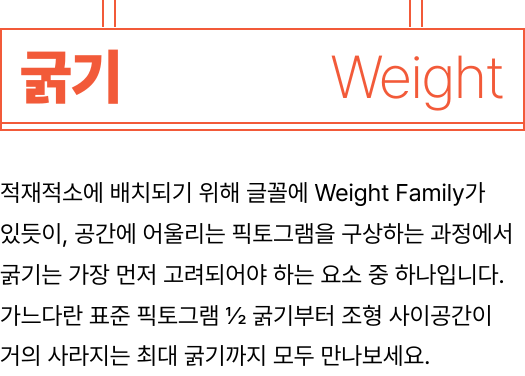

아이덴티티의 표현이 자유로운 3개의 Axes
삼*삼*삼은 가변 가능한 3개의 축을 가지고 있습니다. 굵기(Weight), 비율(Ratio), 곡률(Radius)을 원하는 대로 조정해 다양하게 활용해보세요.
오프라인 공간에 최적화된 27개의 글리프
3*3*3은 오프라인 공간에서 사용 빈도수가 높은 27개의 픽토그램으로 구성되어 있습니다.
*안전을 위해 위험과 직결된 정보를 가진 픽토그램은 제외되었습니다.

적재적소에 배치되기 위해 글꼴에 Weight Family가 있듯이, 공간에 어울리는 픽토그램을 구상하는 과정에서 굵기는 가장 먼저 고려되어야 하는 요소 중 하나입니다. 가느다란 표준 픽토그램 1/2 굵기부터 조형 사이공간이 거의 사라지는 최대 굵기까지 모두 만나보세요.
ge
db

여러 조형 요소로 구성되어있는 픽토그램은 요소 간의 상대적인 비율에 따라서 무한한 시각적 가능성을 가지게 됩니다. 3등신부터 10등신까지 표현 가능한 인물 픽토그램과 의미를 유지하는 선에서 자유무쌍한 비율을 보여주는 사물 픽토그램을 만나보세요.
우리가 추구하는 공간은 둥글고 원만할 수도, 각지고 개성적일 수도 있습니다. 곡률로 다양한 공간을 섬세하게 표현해보세요. 말단의 작은 둥글기부터 구조 전체에 적용되는 둥글기까지 조정할 수 있습니다.
fh